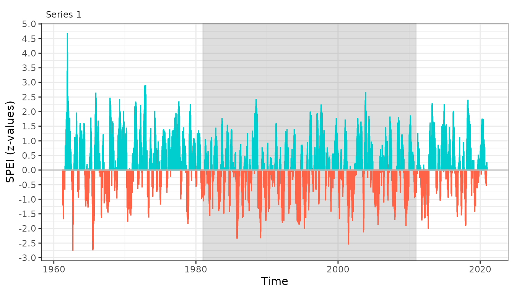
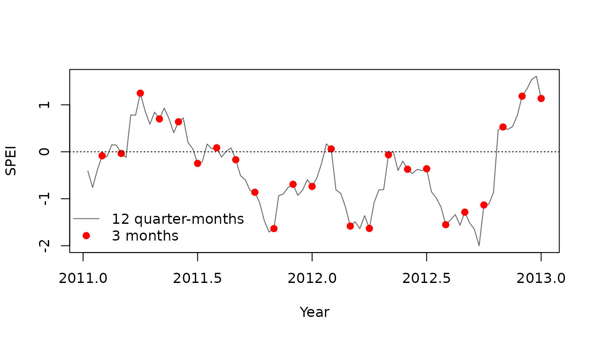

The SPEI and the SPI are usually computed from monthly data. But
spei() and spi() work with any whole number of
periods per year. The number of periods is taken from the frequency of
the time series: 12 for monthly data, 52 for weekly data, 48 for
quarter-months, 36 for ten-day periods, and so on. The distribution of
the index is fitted separately for each period of the year, as it is for
each month with monthly data.
The time scale (scale) then counts periods, not months.
With 48 periods per year, scales of 4, 12, 24 and 48 periods are
equivalent to 1, 3, 6 and 12 months. With 52 weeks per year, 13 weeks
are a quarter of a year, and 52 weeks a full year.
Building the periodic series
Climate data at a finer resolution than the month usually come as daily series, which have to be aggregated into periods. The number of days in a month or a year is not a multiple of seven, so the periods cannot all have the same length. Two conventions are common:
-
Quarter-months, 48 periods per year. Each month is
split into four periods, which start on days 1, 9, 16 and 23. They span
days 1-8, 9-15, 16-22, and 23 to the end of the month, so they have 8,
7, 7, and 6 to 9 days. This is the convention of the Spanish drought
monitor (Vicente-Serrano et al., 2017), and of the
tarazonadataset used below. The periods fit exactly into the months. -
Weeks, 52 periods per year. The year is split into
7-day weeks starting on 1 January, and the day left over at the end of
the year (two in leap years) is added to the last week, which has 8 or 9
days. Functions that number the weeks of the year, such as
lubridate::week(), give a 53rd week of one or two days instead. It should be merged with the 52nd: a period with so few days would be fitted separately and give unreliable values.
These functions give the period of the year of each day, with either convention:
# Quarter-month (1 to 48) of each date
quarter_month <- function(date) {
day <- as.integer(format(date, "%d"))
month <- as.integer(format(date, "%m"))
(month - 1) * 4 + findInterval(day, c(1, 9, 16, 23))
}
# Week (1 to 52) of each date; the last week has 8 or 9 days
week52 <- function(date) {
doy <- as.integer(format(date, "%j"))
pmin((doy - 1) %/% 7 + 1, 52)
}The daily values are then summed (precipitation, evapotranspiration) or averaged (temperature) over each period of each year. The result is converted to a time series with the frequency of the convention. This function assumes that the daily series covers whole years:
to_periods <- function(x, date, period, frequency, fun = sum) {
year <- as.integer(format(date, "%Y"))
v <- tapply(x, list(period, year), fun)
ts(as.vector(v), start = c(min(year), 1), frequency = frequency)
}We try them on a synthetic daily precipitation series of ten years, with rain on about a third of the days:
set.seed(1)
date <- seq(as.Date("2001-01-01"), as.Date("2010-12-31"), by = "day")
prcp_day <- rbinom(length(date), 1, 0.3) * rexp(length(date), 1 / 5)
prcp_qm <- to_periods(prcp_day, date, quarter_month(date), 48)
prcp_wk <- to_periods(prcp_day, date, week52(date), 52)
length(prcp_qm)
#> [1] 480
length(prcp_wk)
#> [1] 520The totals of each year are the same with both conventions, since no day is lost:
all.equal(
as.numeric(aggregate(prcp_qm, FUN = sum)),
as.numeric(aggregate(prcp_wk, FUN = sum))
)
#> [1] TRUEEvapotranspiration
The potential evapotranspiration functions of the package
(thornthwaite(), hargreaves() and
penman()) work with monthly data only. They give an error
with a time series of another frequency. For the SPEI at a finer
resolution there are two options:
- use reference evapotranspiration (ETo) or PET from another source,
at the same resolution as the precipitation, as in the
tarazonadataset; - compute PET daily, for example with the FAO-56 Penman-Monteith
equation (Allen et al., 1998) in another package, and sum it over each
period with
to_periods().
A daily version of penman() is a pending request for the
package (issue #6 on GitHub).
The tarazona data
The tarazona dataset has the climate of an Aleppo pine
plantation at Tarazona (Spain), extracted from the Spanish drought
monitor (Vicente-Serrano et al., 2017). It has 48 quarter-months per
year from 1961 to 2020. The precipitation (PRCP) and the
ETo (ETO) are totals per period, in mm, and the
temperatures are means of the period. See ?Datasets for the
details, and vignette("scale_scan") for the tree growth
data of the same site.
data(tarazona)
clim <- tarazona$clim
frequency(clim)
#> [1] 48
head(clim, 8)
#> Time Series:
#> Start = c(1961, 1)
#> End = c(1961, 8)
#> Frequency = 48
#> PRCP ETO TMIN TMAX
#> 1961.000 15.10 7.4 0.69 6.92
#> 1961.021 4.16 6.5 -1.85 5.59
#> 1961.042 16.51 4.6 -1.68 6.09
#> 1961.062 9.75 8.7 -0.25 7.68
#> 1961.083 1.35 15.0 2.67 13.07
#> 1961.104 1.12 10.7 0.09 17.79
#> 1961.125 2.95 11.7 0.39 14.25
#> 1961.146 1.35 15.0 4.53 16.24The climatic water balance is the precipitation minus the ETo:
bal <- clim[, "PRCP"] - clim[, "ETO"]Computing the index
spei() is called as with monthly data. The time scales
are given in periods. Here we compute the SPEI at 4, 12, 24 and 48
quarter-months (1, 3, 6 and 12 months). The reference period is given as
year and period, from the first period of 1981 to the last period of
2010:
scales <- c(4, 12, 24, 48)
spei_qm <- lapply(scales, function(s) {
spei(bal, s, ref.start = c(1981, 1), ref.end = c(2010, 48),
verbose = FALSE
)
})
names(spei_qm) <- scalesThe plot method works as with monthly data. Here, the
SPEI at 12 quarter-months:
plot(spei_qm[["12"]])
The values of the index for the last ten years at the four scales:
Comparison with the monthly index
The monthly data are the sums of each group of four quarter-months:
to_monthly <- function(x) {
ts(colSums(matrix(x, nrow = 4)), start = start(x)[1], frequency = 12)
}
bal_m <- to_monthly(clim[, "PRCP"]) - to_monthly(clim[, "ETO"])
spei_m3 <- spei(bal_m, 3, ref.start = c(1981, 1), ref.end = c(2010, 12),
verbose = FALSE
)The SPEI at 12 quarter-months in the last period of each month covers the same days as the SPEI at 3 months in that month. The sums are the same, and the distribution of that period is fitted to the same values as the distribution of the month. So the two indices are equal:
last <- cycle(bal) %% 4 == 0
all.equal(
as.numeric(spei_qm[["12"]]$fitted[last]),
as.numeric(spei_m3$fitted)
)
#> [1] TRUEThe quarter-month index adds three values between each pair of monthly values. The plot shows both series in 2011 and 2012, with each value placed at the end of its window:
w <- window(spei_qm[["12"]]$fitted, start = c(2011, 1), end = c(2012, 48))
m <- window(spei_m3$fitted, start = c(2011, 1), end = c(2012, 12))
plot(as.numeric(time(w)) + 1 / 48, w,
type = "l", col = "grey40",
xlab = "Year", ylab = "SPEI"
)
points(as.numeric(time(m)) + 1 / 12, m, pch = 19, col = "red")
abline(h = 0, lty = 3)
legend("bottomleft", c("12 quarter-months", "3 months"),
col = c("grey40", "red"), lty = c(1, NA), pch = c(NA, 19), bty = "n"
)
This equality holds because the quarter-months fit exactly into the months. Weeks do not, so a weekly index is close to the monthly one but not equal to it.
Noise and the fit of the distributions
The finer resolution has some costs.
At short time scales the index changes a lot from one period to the next. With one period (about a week) the index reflects the rain of single events. The correlation between consecutive values (lag-1 autocorrelation) shows how fast the index changes:
spei_1 <- spei(bal, 1, ref.start = c(1981, 1), ref.end = c(2010, 48),
verbose = FALSE
)$fitted
lag1 <- function(x) {
x[!is.finite(x)] <- NA
cor(x[-1], x[-length(x)], use = "complete.obs")
}
round(c("SPEI-1" = lag1(spei_1), apply(idx, 2, lag1)), 2)
#> SPEI-1 SPEI-4 SPEI-12 SPEI-24 SPEI-48
#> 0.24 0.81 0.95 0.97 0.99At one period consecutive values are only weakly correlated. At 4 periods (one month) and more the windows of consecutive values overlap, and the index changes more slowly.
The distribution of the index is fitted separately for each of the 48
periods of the year. Each fit uses one value per year, so it has as many
values as a monthly fit: 60 with the whole record, and 30 with the
reference period 1981-2010. But there are four times as many fits, each
with its own sampling error, and the values of neighbouring periods do
not inform each other. Totals over short periods are also more skewed,
and precipitation has more zeros: 2.2% of the quarter-months of the
tarazona data have no precipitation (up to 7% in some
periods), while all the months have some. This matters for the SPI at
short time scales. The SPEI at one period also has 1 value outside the
range of its fitted distribution, which gives an infinite index value.
See vignette("options") for the treatment of zeros and of
values outside the distribution.
So the fine resolution is most useful at time scales of one month or more, to locate the start and the end of a dry spell, or the window of the year that a variable responds to, more precisely than with monthly data.
Finding the best window
scale_scan() works with any frequency too. It correlates
an annual series with the index in each period of the year and at each
time scale. For example, to scan the tree growth of the
tarazona dataset at time scales of 4 to 96 quarter-months
(rbai being the detrended growth of the cores):
scale_scan(bal, rbai, scales = seq(4, 96, by = 4))See vignette("scale_scan") for the complete example.
References
Allen, R.G., Pereira, L.S., Raes, D., Smith, M. (1998). Crop evapotranspiration. Guidelines for computing crop water requirements. FAO Irrigation and Drainage Paper 56. FAO, Rome.
Manrique-Alba, À., Beguería, S., Molina, A.J., González-Sanchis, M., Tomàs-Burguera, M., del Campo, A.D., Colangelo, M., Camarero, J.J. (2020). Long-term thinning effects on tree growth, drought response and water use efficiency at two Aleppo pine plantations in Spain. Science of the Total Environment, 728, 138536. https://doi.org/10.1016/j.scitotenv.2020.138536
Vicente-Serrano, S.M., Beguería, S., López-Moreno, J.I. (2010). A multiscalar drought index sensitive to global warming: the Standardized Precipitation Evapotranspiration Index. Journal of Climate, 23(7), 1696–1718. https://doi.org/10.1175/2009JCLI2909.1
Vicente-Serrano, S.M., Tomas-Burguera, M., Beguería, S., Reig, F., Latorre, B., Peña-Gallardo, M., Luna, M.Y., Morata, A., González-Hidalgo, J.C. (2017). A high resolution dataset of drought indices for Spain. Data, 2(3), 22. https://doi.org/10.3390/data2030022. Data available from the Spanish drought monitor, https://monitordesequia.csic.es.